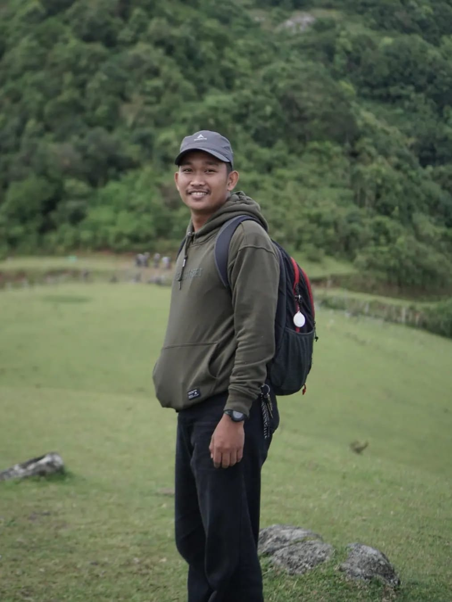
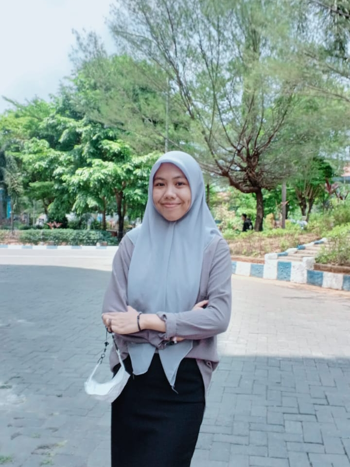
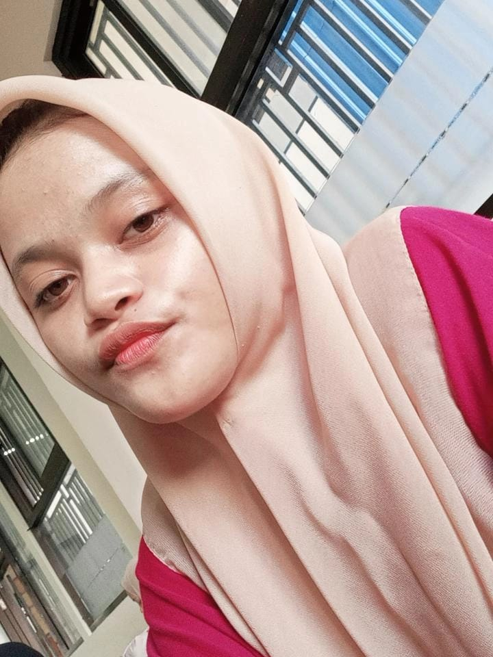
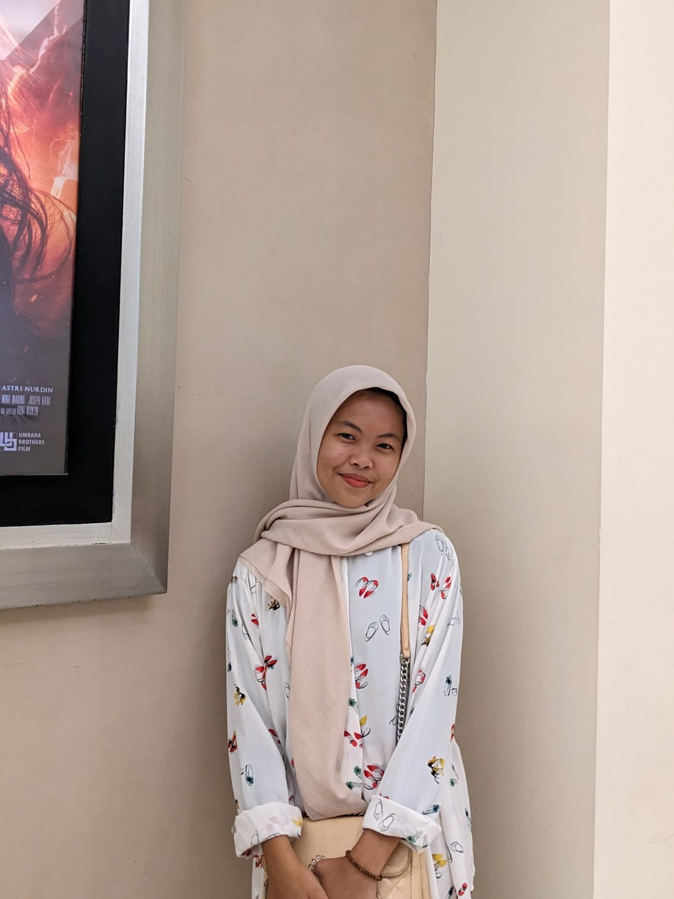
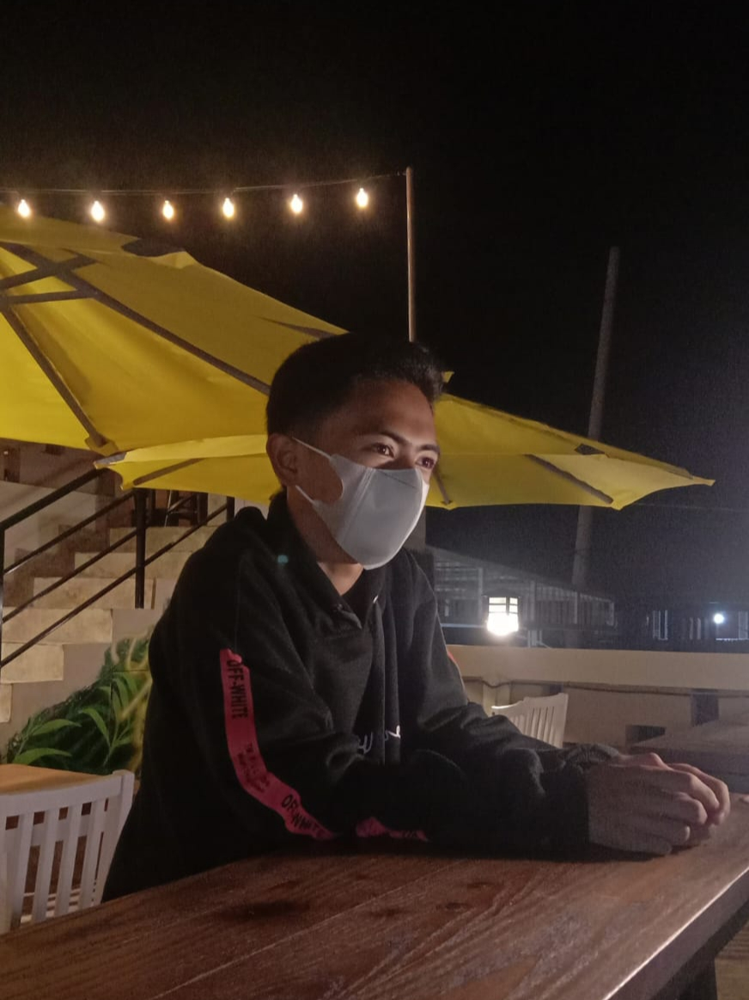
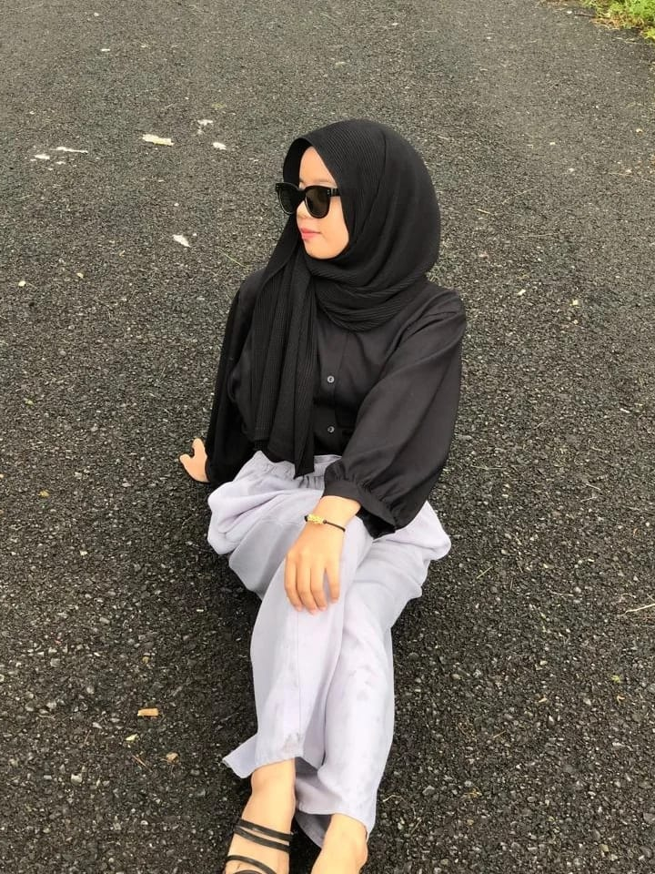
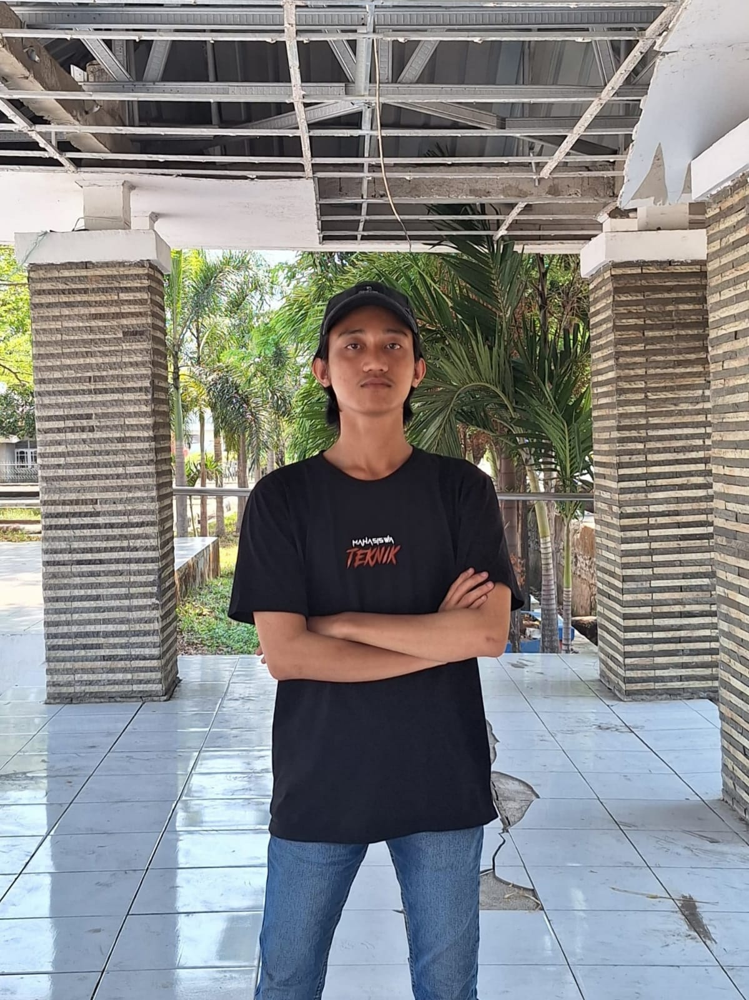
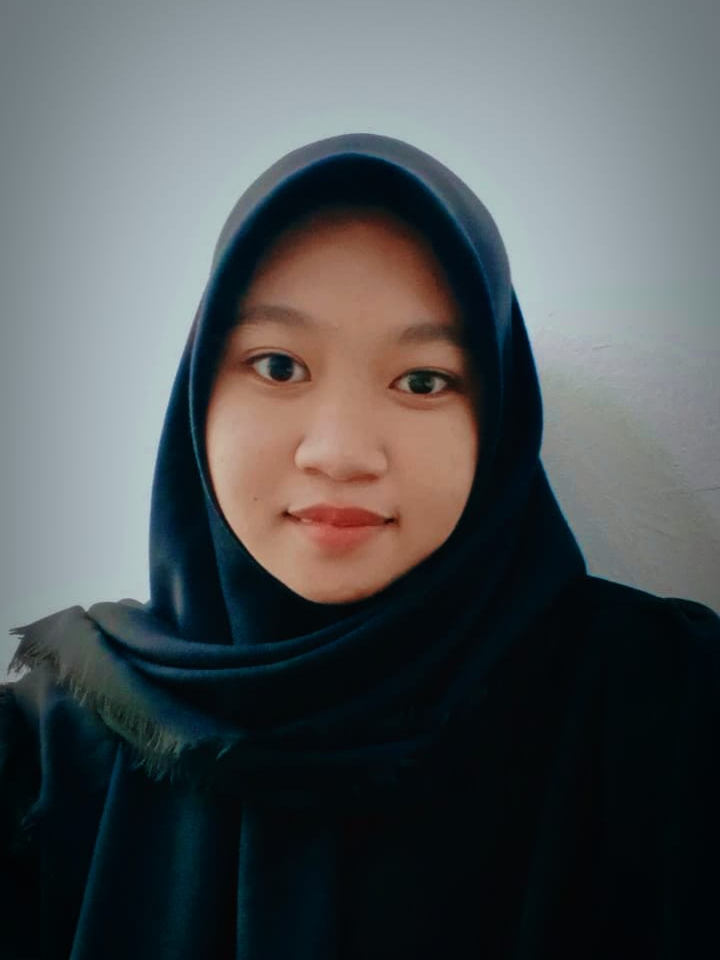
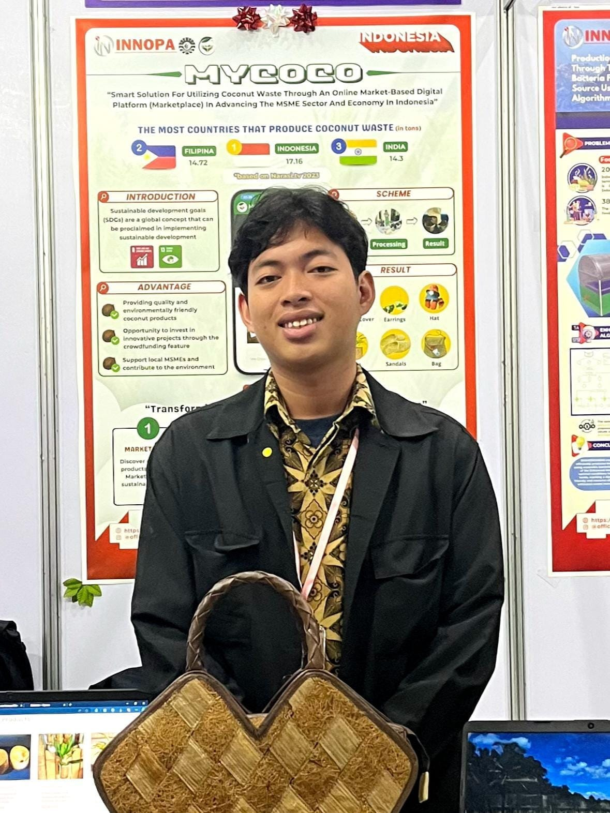

.jpeg)
REZKY AMALIAH RUSLI
15 AGUSTUS 2005
Hobi : Dengar Musik
Motto : "IF HE CAN WHY CAN'T I?"

AHMAD FAISAL
04 APRIL 2004
Hobi : Mancing
Motto : "ADAB DULU BARU ILMU"

ANDI CITRA AYU LESTARI
16 APRIL 2005
Hobi : Nonton
Motto : "TERUS BELAJAR SAMPAI MENJADI BISA NONTON KONSER NCT DAN TAYLOR SWIFT"

AHMAD FATHIR
24 SEPTEMBER 2004
Hobi : Bermain Komputer dan Membaca buku
Motto : "BUILD WITH CODE"

MUSTIKA
07 JULI 2003
Hobi : REBAHAN
Motto : "TIDUR ADALAH SALAH SATU CARA UNTUK MENGAPAI MIMPI"

YUSUF MARCELINO
12 MARET 2005
Hobi : Membaca Komik
MOTTO : "MENJAGA KEBERSIHAN"

MUSDALIPA
13 FEBRUARI 2003
Hobi : Nonton
Motto : "TETAP KUAT DAN TETAP SEHAT"

SYAHRUL RAMADHAN
13 NOVEMBER 2003
Hobi : Badminton
Motto : "FOKUS PADA TUJUAN BUKAN HAMBATAN(NYONTEK GOOGLE)"

AMELIA
14 NOVEMBER 2003
Hobi : Healing
Motto : "TETAP HIDUP"

MUHAMMAD FIKRI HAEKAL
01 JANUARI 2001
Hobi : Tidur
Motto : "TUHAN TELAH MATI DAN KITALAH YANG MEMBUNUHNYA"

SALSA BILA PUTRI
25 JANUARI 2005
Hobi : Menggambar
Motto : "TETAP BERNAFAS APAPUN KEADAANNYA"

ANDI ARYA GALANG
04 APRIL 2003
Hobi : Mencari Tuhan
Motto : "MAIN LAYANG LAYANG"

FAHRI RANDI SAPUTRA SANDI
27 MARET 2005
Hobi : Main Game
Motto : "AKU ADALAH AKU, KAU ADALAH KAU"

SYARIPUDDIN
22 OKTOBER 2003
Hobi : Membaca
Motto : "JADIKAHLAH SEMUA ORANG GURUMU DAN JADIKANLAH SEMUA TEMPAT ADALAH SEKOLAHMU"

PARWATI
06 MEI 2004
Hobi : Membaca
Motto : "BANGUN DAN BERSYUKUR"

MUHAMMAD SYARIF
12 DESEMBER 2003
Hobi : Makan
Motto : "ANAK MUDA SEHARUSNYA MENCOBA MENDAPATKAN BERBAGAI MACAM PENGALAMAN"
MUHAMMAD AKSAN
19 AGUSTUS 2005
Hobi : Makan
Motto : "KUNCI KESSEHATAN CUMA SATU, YAITU JANGAN SAKIT"

WINDU YOGA NUGRAHA
09 APRIL 2005
Hobi : Tidur
Motto : "MAU KAYA"